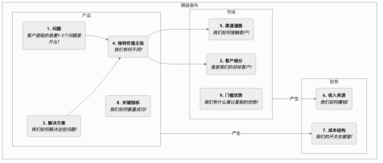

精益画布¶
在创业的早期阶段，最大的风险往往不是“我们能否把产品做出来”，而是“我们做出来的产品到底有没有人要”。传统的商业计划和商业模式画布对于成熟企业来说是很好的工具，但对于身处高度不确定性之中的初创企业而言，它们可能过于复杂，且没有足够聚焦于最关键的风险。精益画布（Lean Canvas） 正是为解决这一问题而生，它是对商业模式画布的精彩改良，专为早期创业者量身定做。
精益画布由阿什·莫瑞亚（Ash Maurya）在其著作《精益创业实战》（Running Lean）中提出，它继承了商业模式画布的简洁直观，但将焦点从“商业模式的完整描述”转向了“系统性地识别和验证最高风险的创业假设”。它以问题-解决方案为核心，并增加了对关键指标和竞争优势的关注，更深刻地体现了精益创业（Lean Startup）中“构建-测量-学习”的循环思想。它是一张指导创业者在迷雾中航行的、以风险为导向的作战地图。
精益画布的九个模块¶
精益画布保留了商业模式画布的九个格子，但替换了其中四个，使其更具行动性和风险导向性。
与商业模式画布的不同之处：
-
问题（Problem） 替换了“关键伙伴”：这是最重要的改变。它强迫创业者首先清晰地定义目标客户最迫切需要解决的1-3个问题。
-
解决方案（Solution） 替换了“核心业务”：在定义了问题之后，才针对性地提出你的解决方案（通常是产品的核心功能）。
-
关键指标（Key Metrics） 替换了“核心资源”：对于初创公司，最重要的不是拥有什么资源，而是如何衡量业务的健康度和增长。关键指标是驱动所有行动的指挥棒。
-
门槛优势（Unfair Advantage） 替换了“客户关系”：这也被称为“不公平优势”或“壁垒”，指那些无法被竞争对手轻易复制或买到的核心竞争力。这是商业模式长期生存的关键。

如何使用精益画布¶
精益画布的使用过程是一个持续验证和迭代的循环。
-
绘制你的“A计划”画布
在与任何客户交谈之前，首先快速地将你对创业项目的所有初始构想和假设，填写到一张精益画布上。这通常只需要15-20分钟。这是你的“A计划”，是你所有待验证假设的集合。
-
识别最高风险的假设
审视你的第一版画布，并识别出其中风险最高、不确定性最大的部分。通常，对于一个全新的项目，风险最高的假设按顺序是： * 问题-客户假设：真的存在这个问题吗？这些人真的是你的目标客户吗？ * 问题-解决方案假设：你的解决方案真的能解决他们的问题吗？ * 定价-价值主-主张假设：客户愿意为你的解决方案付费吗？
-
系统性地验证假设
设计并执行一系列“最小化可行实验”（通常是问题访谈和解决方案访谈）来系统性地验证你的高风险假设。例如： * 进行问题访谈：走出去，与你的目标客户交谈，但不要谈论你的产品。你的唯一目的是深入地理解他们的问题、现有行为和痛点，以验证画布上的“问题”和“客户细分”模块。 * 进行解决方案访谈：在验证了问题确实存在后，向客户展示你的解决方案（可以是一个原型、一个Demo），以验证你的“解决方案”和“价值主张”，并测试他们的付费意愿（“收入来源”）。
-
迭代你的画布
根据访谈和实验中获得的认知，不断地回来更新和迭代你的精益画布。某些假设被验证，某些被证伪。画布就像一本实验笔记，记录了你的创业项目从最初的构想到找到“产品-市场匹配”的完整演化路径。
应用案例¶
案例一：Dropbox（云存储服务）的早期画布
- 问题：在多台设备间同步文件非常繁琐；用U盘或邮件发送大文件很痛苦；忘记备份导致数据丢失。
- 客户细分：拥有多台电脑的科技爱好者、自由职业者。
- 独特价值主张：“将你的文件放进一个‘魔法口袋’，随处可用，永不丢失。”
- 解决方案：一个在后台无缝运行的桌面应用，能自动同步一个指定文件夹的内容。
- 关键指标：用户注册数、文件上传成功率、活跃用户数。
- 门槛优势：网络效应——越多人使用，分享和协作就越方便。
- 验证：创始人德鲁·休斯顿制作了一个简单的产品演示视频，发布在技术爱好者社区。一夜之间，等待名单从5000人激增到75000人，强有力地验证了“问题-解决方案”的匹配。
案例二：一个计划中的“健康餐饮外卖”服务
- 问题：上班族很难吃到健康、营养均衡的午餐；自己准备太耗时；外卖普遍油腻。
- 客户细分：注重健康、有健身习惯的年轻白领。
- 独特价值主张：“营养师搭配好的、每日新鲜制作的健身餐，准时送到你的办公室。”
- 解决方案：提供按周订购的午餐套餐，菜单每周更新，标注卡路里和营养成分。
- 关键指标：周复购率、用户生命周期价值。
- 门槛优势：与优质食材供应商的独家合作关系、营养师团队的专业性。
- 验证：创始人可以先不开发App，而是通过一个微信群或问卷星接受预定，手动为最早的20名用户配送午餐，以此来验证整个流程和用户需求。
案例三：Airbnb的早期画布
- 问题：在热门会议期间，城市酒店价格昂贵且被预订一空。
- 客户细分：来参加设计大会但预算有限的设计师。
- 解决方案：提供一个平台，让本地居民（房东）可以将家里的空余气垫床租给这些设计师。
- 独特价值主-主张：以更低的价格获得住宿，并能与本地人交流。
- 验证：创始人自己在家里放了三张气垫床，并成功地租给了前来参会的设计师，亲自验证了整个商业模式的可行性。
精益画布的价值与局限¶
核心价值
- 聚焦风险：强迫创业者从一开始就直面最高风险的假设。
- 速度与迭代：非常适合快速地勾勒、讨论和迭代商业模式，完美契合精益创业的节奏。
- 以问题为中心：确保创业的起点是解决一个真实、有价值的客户问题。
潜在局限
- 对外部环境关注不足：与商业模式画布一样，它本身没有包含对竞争和宏观环境的分析。
- 不适用于所有企业：它最适用于不确定性高的初创企业。对于商业模式已经得到验证的成熟企业，商业模式画布可能是一个更全面的工具。
延伸与关联¶
- 商业模式画布：精益画布是其在精益创业场景下的重要变体和发展。
- 客户开发（Customer Development）：由史蒂夫·布兰克（Steve Blank）提出的方法论，强调“走出办公室”去验证假设，是精益画布在行动层面的指导原则。
- 价值主张画布：可以作为精益画布中“问题”、“解决方案”和“独特价值主张”这几个模块的深化工具，帮助创业者更精细地打磨产品与市场的契合度。
来源参考：阿什·莫瑞亚（Ash Maurya）的《精益创业实战》（Running Lean）是精益画布最权威的来源，书中详细介绍了如何结合客户开发，一步步地使用和迭代精益画布。该方法深受埃里克·莱斯（Eric Ries）的《精益创业》（The Lean Startup）和史蒂夫·布兰克（Steve Blank）的客户开发模型的影响。